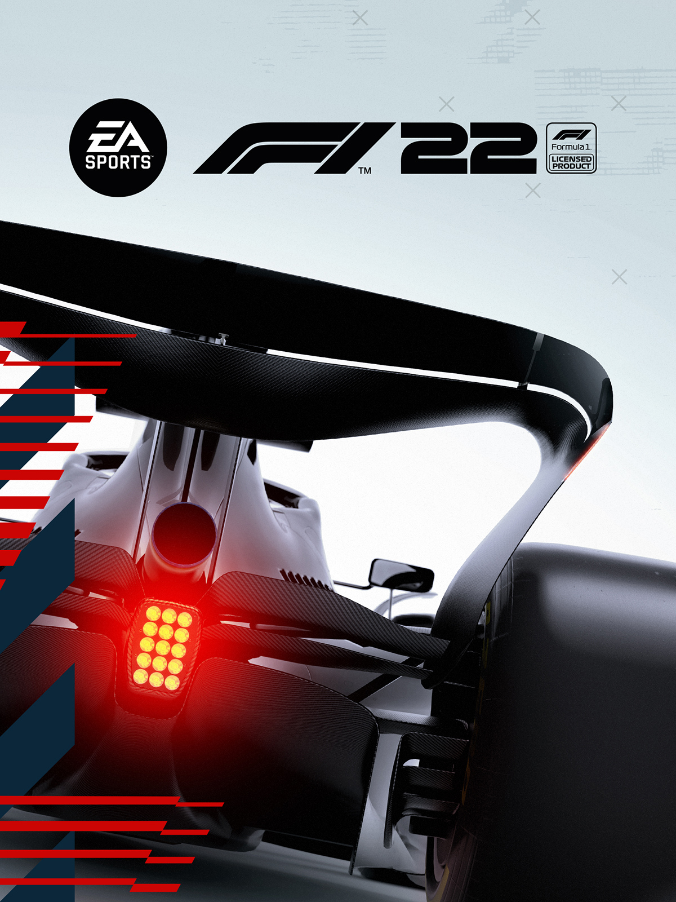

F1 2022 :
caracteristique du jeux:
| Editeur(s)/Developpeur(s) | Codmasters |
|---|
| Sortie France | 28 Juin 2022 |
|---|
| Mode(s) | Jouable en solo / Multi en ligne / Multi coop |
|---|
| Support(s) | Ps/Xbox |
|---|
| Langue disponible | Texte en français/Voix en français |
|---|
Synopsis:
Entrez dans la nouvelle ère de la Formule 1® avec EA SPORTS™ F1® 22, le jeu vidéo officiel du Championnat du monde de Formule 1 FIA 2022™. Démarrez une nouvelle saison au volant de voitures remaniées, profitez de règles repensées qui redéfinissent la course, testez vos compétences sur le nouvel autodrome international de Miami et découvrez le prestige et le glamour de La vie en F1®. Pilotez les nouvelles voitures exceptionnelles et retrouvez les 20 pilotes et les 10 écuries authentiques de la saison 2022 de Formula 1®. Prenez le contrôle de votre expérience de course soit en immersion dans la peau du pilote, soit à la place d’un spectateur. Créez une écurie et placez-la en pole position dans le mode Carrière approfondi « Mon Écurie », participez à un duel effréné en écran partagé ou en multijoueur, ou changez de rythme en pilotant une prestigieuse supercar.
Points Forts:
- Des modes écurie et carrière complets.
- Des événements Supercars.
- Impeccable dans la conduite et les ressentis.
- Paramétrables selon le niveau de jeu.
- Nouvelles règles et courses sprints au menu.
- Les 22 circuits de 2022 très fidèles et mis à jour.
- Un nouveau système d'entrée au stand réussi.
Points Faibles:
- La partie F1 Life trop superficielle pour sa sortie.
- Trop peu de soucis techniques et d'abandons chez l'IA.
- Chute de FPS lors des cinématiques.
- On attend encore plus des modes principaux.
- Pas de mode histoire avec un scénario cette saison.